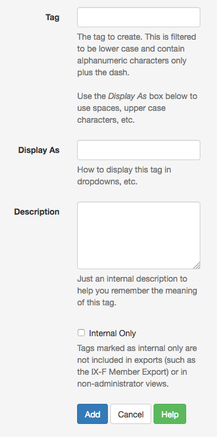
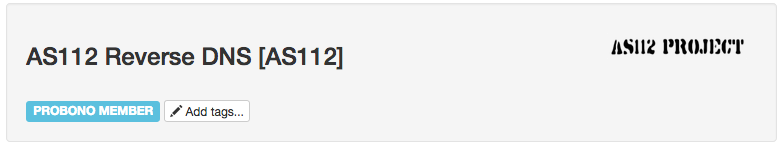
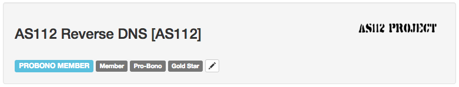

Customer Tags
IXP Manager allows administrators to tag customers to indicate specific properties that are not built into IXP Manager by default. Some examples might include:
- commercial vs membership based relationship;
- special billing relationship (e.g. customer originally connected via 100Mb port which has been discontinued; customer now on 1Gb port but not paying until traffic exceeds 100Mb);
Tag Management
Tags can be added / edited / deleted by clicking on the Customers option in the left hand side menu and then clicking on the Tags sub-option which appears. The form for adding tags is pretty straight-forward:

While the help text should be self-explanatory, here is some more detail and examples:
-
Tag: should be something like:
commercial,member,100mb-upgrade-program. Note that these are always lowercase alphanumeric characters and optional dashes. -
Display AS: allows you to provide something prettier when displaying the tag within IXP Manager. Examples following from the above might include:
Commercial,Member,100Mb Upgrade Program. -
Description: allows you to add some text that may help you remember the specific use-case of a tag in five years time!
-
Internal Only: if not set, then tags can be optionally including in various public / non-superadmin accessible APIs / pages / exports.
Assigning Tags to Customers
When at least one tag has been created, the customer overview masthead will now provide the option to add tags to customers:

Once one or more tags have been added, they are shown in the masthead such as:

You will also find an option in the Edit menu of the customer overview page to Manage Tags....
Exporting Tags
Tags can be exported as part of the IX-F Member Export process by adding ?withtags=1 to the API URL. For example:
https://ixp.example.com/api/v4/member-export/ixf/0.7?withtags=1
You have to specify ?withtags=1 as this is not part of the official IX-F Member Export specification.
When you request this, you will find an empty object with each customer that does not have tags in an ixp_manager namespace of the form:
"ixp_manager": {
"tags": []
}
And for those that do have tags, it will be of the form:
"ixp_manager": {
"tags": {
"test-tag1": "Test Tag1",
"test-tag2": "Test Tag2"
}
}
where test-tag2 is the tag and Test Tag2 is the display name.